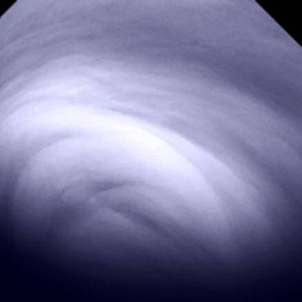
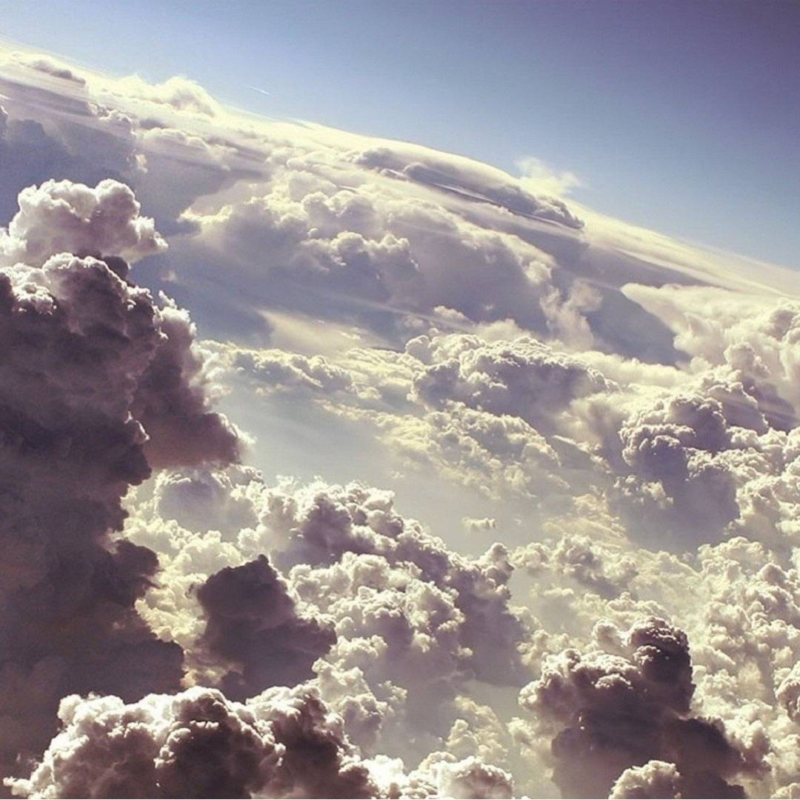
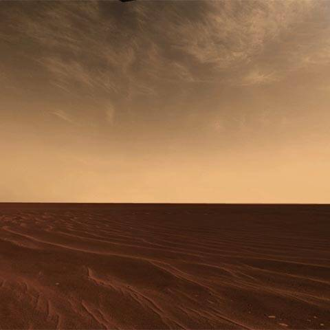
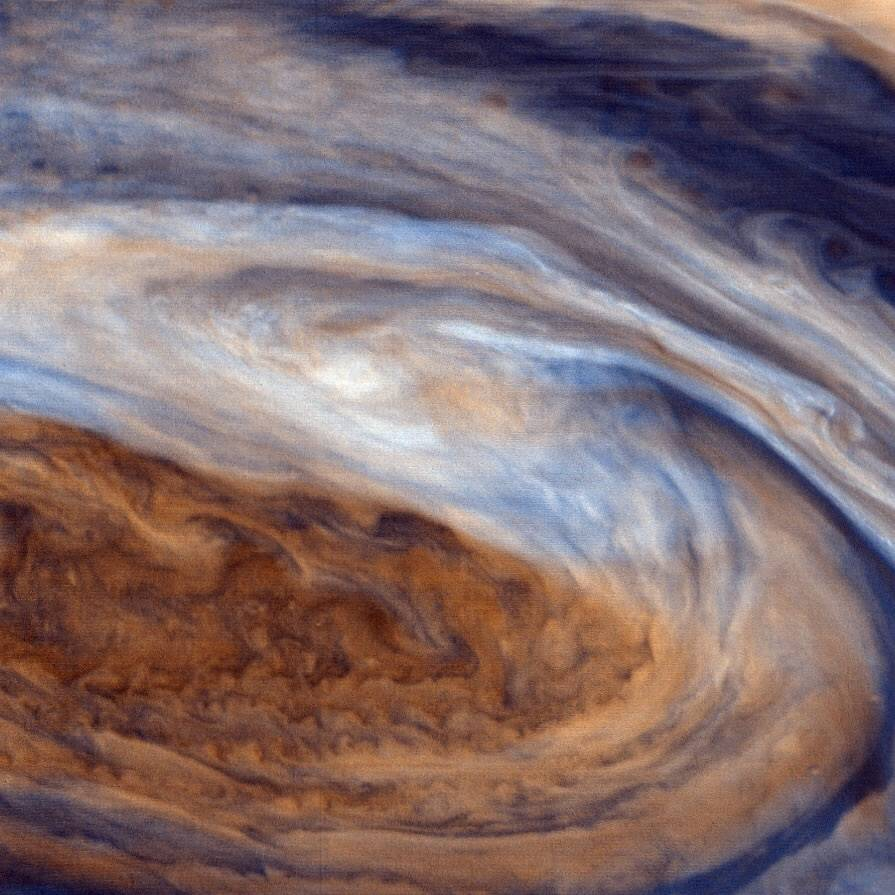
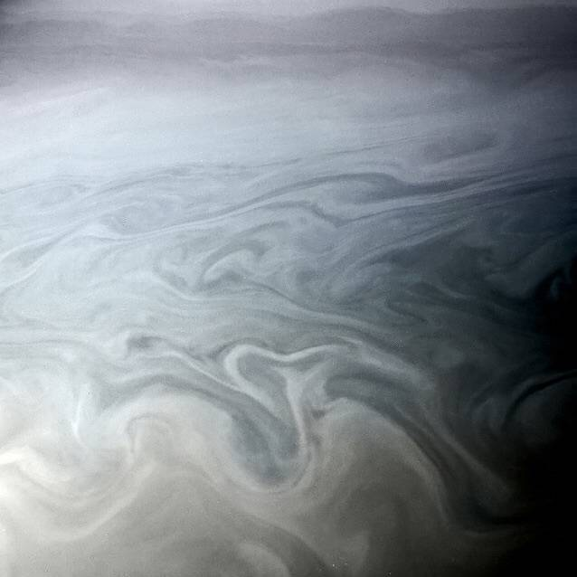
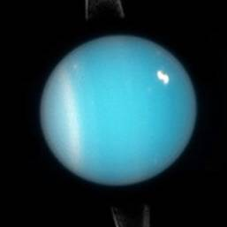
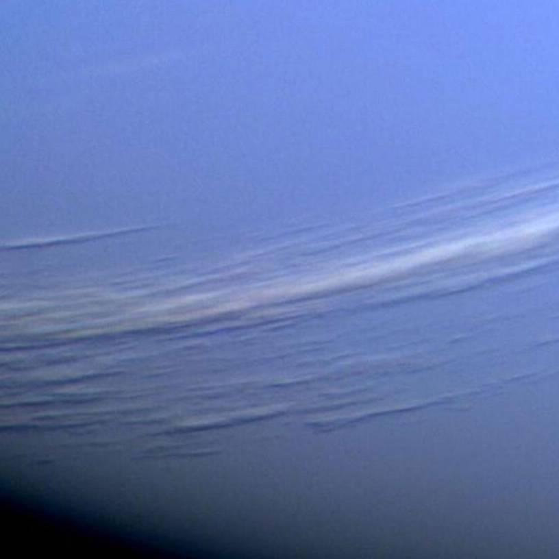
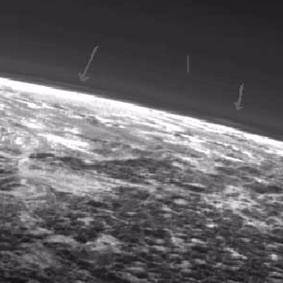
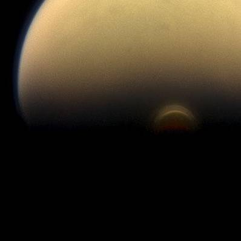
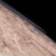

Clouds
-
Ten bodies in the solar system have stable atmospheres.
-
All of them have clouds.
-

Venus
Covered in clouds so thick we can never see the surface.
-

Earth
A contender for most beautiful clouds in the known universe.
-

Mars
Thin wispy infrequent white clouds high in the delicate atmosphere.
-

Jupiter
Look at them. Layers, bands, deep and boiling. Clouds on clouds on clouds all of contrasting colors. Beautiful.
-

Saturn
Just as complex as Jupiter but far less flashy.
-

Uranus
We don't know much about the atmosphere of Uranus but we've caught a few high bright clouds now and again.
-

Neptune
Look at these thousands-of-miles-long streaky white clouds casting shadows on the atmosphere below.
-

Pluto
Even tiny Pluto with its barely-there atmosphere seems to have delicate clouds.
-

Titan
The mighty moon of Saturn with its thick smoggy atmosphere (thicker than ours) has layers of clouds including this bright water ice cloud floating so high it peeks out of the nighttime shadow.
-

Triton
The thinnest stable atmosphere in the solar system, 1/100,000th the density of ours, and look at that precious cloud.
-
(Five other bodies technically have atmospheres but they're so tenuous that they would disappear completely if something wasn't constantly replenishing them. These atmospheres are a trillion or more times thinner than ours and so they don't really count.)
-
It stands to reason that wherever you find air,
-
anywhere in the universe,
-
you'll also find clouds.
-
If you stepped into a time machine and jumped back two, three billion years into the past the world you'd find would be entirely foreign.
-
No animals.
-
No plants.
-
No landscape shaped by life. No grass or trees or moss or sand.
-
I don't know what the ground would look like but it wouldn't be dirt.
-
I'm not sure what color the sky would be.
-
An alien world.
-
But not quite. Because when you look up...
-
...you see clouds in the sky.
-
Clouds are timeless.
-
Placeless.
-
There's almost nothing else like that in the world.
-
And we have the best ones right here.
-
Right now.
-
All of us.
-